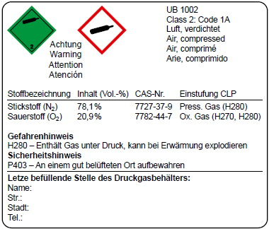

Grundlage für die Benutzung von Atemschutzgeräten sind § 2 "PSA-Benutzungsverordnung" und §§ 29 ff. DGUV Vorschrift 1.
Der Unternehmer oder die Unternehmerin hat den Versicherten Atemschutzgeräte grundsätzlich zu ihrer persönlichen Benutzung gemäß § 2 "PSA-Benutzungsverordnung" zur Verfügung zu stellen. Bei Atemschutzgeräten mit abtrennbarem Atemanschluss kann das z. B. die persönlich zugewiesene Maske sein.
Erfordern die Umstände, dass Atemschutzgeräte von verschiedenen Personen nacheinander gebraucht werden, hat die Unternehmerin oder der Unternehmer dafür zu sorgen, dass die Atemschutzgeräte bzw. Atemanschlüsse nach jedem Gebrauch gereinigt, desinfiziert und geprüft werden.
Geschlossene Atemanschlüsse dürfen der atemschutzgerättragenden Person zum Einsatz nur zur Verfügung gestellt werden, wenn vor dem erstmaligen Gebrauch eine Anpassungsüberprüfung erfolgreich durchgeführt wurde.
Atemschutzgeräte, sofern es keine Einweggeräte sind, folgen in der Regel dem dargestellten Kreislauf:
Abb. 10 Benutzungskreislauf
Atemschutzgeräte sind von den atemschutzgerättragenden Personen bestimmungsgemäß zu benutzen.
Geräte zum Einsatz in explosionsgefährdeten Bereichen müssen die Anforderungen aus der ATEX-Richtlinie (2014/34/EU) erfüllen.
Personen unter 18 Jahren dürfen Atemschutzgeräte nur bei Arbeitstätigkeiten gebrauchen, die zur Erreichung des Ausbildungsziels dienen. Dabei muss zu deren Schutz die Aufsicht durch eine fachkundige Person gewährleistet sein, die Grenzwerte der Schadstoffe in der Umgebungsatmosphäre eingehalten werden und ein ausreichender Sauerstoffgehalt vorhanden sein. Sie dürfen nicht für Rettungsaufgaben eingesetzt werden. Der Einsatz von Atemschutzgeräten für Fluchtzwecke ist von dieser Beschränkung ausgenommen.
Die Unternehmerin oder der Unternehmer hat im Rahmen des betrieblichen Atemschutzwesens die Auswahl und Bereitstellung von Atemschutzgeräten sowie die Gewährleistung des ordnungsgemäßen Zustandes und des sicheren Gebrauchs der Atemschutzgeräte zu organisieren.
Das betriebliche Atemschutzwesen beinhaltet weiterhin die Erstellung eines Instandhaltungsprogrammes, in dem erforderliche Wartungs-, Reparatur- und Ersatzmaßnahmen aufgeführt werden. Ebenso sind zur sachgemäßen Lagerung, dem Transport und der Entsorgung von Atemschutzgeräten und deren Bauteilen Festlegungen zu treffen.
Die genannten Aufgaben bzw. Tätigkeiten können durch den Unternehmer oder die Unternehmerin auch auf verschiedene Personen oder externe Dienstleister, die über jeweils geeignete Fähigkeiten und Kenntnisse verfügen, übertragen werden. Die Übertragung von Unternehmerpflichten hat schriftlich, z. B. im Arbeitsvertrag, zu erfolgen. Die Funktionsträger im Atemschutz, deren Aufgaben sowie die für die Erfüllung der übertragenen Aufgaben zu erwerbenden Kenntnisse und Fähigkeiten sind im DGUV Grundsatz 312-190 beschrieben.
Ergänzend zur tätigkeitsbezogenen Betriebsanweisung muss der Unternehmer oder die Unternehmerin für den Einsatz von Atemschutzgeräten Betriebsanweisungen nach § 3 Abs. 2 "PSA-Benutzungsverordnung" (PSA-BV) mit allen für den sicheren Einsatz erforderlichen Angaben erstellen und deren Einhaltung überwachen.
Im Rahmen des betrieblichen Atemschutzwesens ist zu prüfen, ob ggf. weitere Betriebsanweisungen z. B. für die Wartungs-, Reparatur- und Ersatzmaßnahmen erstellt werden müssen.
Musterbetriebsanweisungen für den Einsatz von Atemschutzgeräten sind in Kapitel 11.2 aufgeführt.
Die blauen Gebotszeichen, die in der technischen Regel für Arbeitsstätten "Sicherheits- und Gesundheitsschutzkennzeichnung" (ASR A1.3) verbindlich festgelegt sind, schreiben ein bestimmtes Verhalten vor. Ergibt sich im Rahmen der Gefährdungsbeurteilung, dass eine Kennzeichnung mit einem Gebotszeichen erforderlich ist, muss dieses sichtbar, unter Berücksichtigung etwaiger Hindernisse, am Zugang zum Gefahrbereich angebracht werden. Für das Benutzen von persönlicher Schutzausrüstung sind mehrere Gebotszeichen festgelegt.
Das Gebotszeichen M017 "Atemschutz benutzen" ist in Abbildung 11 abgebildet. Es wird auch in Betriebsanweisungen verwendet.
Abb. 11 M017 "Atemschutz benutzen"
Die Unternehmerin oder der Unternehmer hat den einwandfreien Zustand gemäß den Vorgaben der Herstellerfirma und ein einwandfreies Funktionieren der Atemschutzgeräte zu gewährleisten sowie für gute hygienische Bedingungen zu sorgen. Dies setzt eine zweckmäßige Lagerung und entsprechende Wartungs-, Reparatur und Ersatzmaßnahmen voraus. Er oder sie kann diese Aufgaben – unter Berücksichtigung von Art und Zahl der Atemschutzgeräte – verantwortlich übertragen.
Der ordnungsgemäße Zustand muss auch bei mehrmaligem Gebrauch durch dieselbe Person innerhalb einer Arbeitsschicht oder Arbeitswoche sichergestellt sein. Bei mehrfachem, auch nur kurzzeitigem, Gebrauch über die Dauer einer Arbeitswoche hinaus, ohne Reinigung, ist in der Regel weder eine hinreichende Dichtheit noch ein einwandfreier hygienischer Zustand gegeben. Es ist nicht auszuschließen, dass in Abhängigkeit der Arbeits- und Umgebungsbedingungen bereits nach einmaligem Gebrauch der einwandfreie hygienische Zustand und die Funktion des Atemschutzgerätes nicht mehr gegeben sind.
Atemschutzgeräte dürfen weder manipuliert noch mit festgestellten Mängeln eingesetzt werden.
Atemschutzgeräte dürfen ausschließlich in der durch die Herstellerfirma vorgegebenen Konfiguration eingesetzt werden. Es dürfen nur solche Baugruppen verwendet werden, die in der Informationsbroschüre der Herstellerfirma aufgeführt sind.
Die atemschutzgerättragende Person muss eigenverantwortlich erkennen, ob personenbezogene Ausschlusskriterien für den Gebrauch von Atemschutzgeräten vorliegen, z. B. Einschränkung der persönlichen Leistungsfähigkeit, fehlende arbeitsmedizinische Vorsorge.
Die atemschutzgerättragende Person hat vor dem Einsatz das Atemschutzgerät auf erkennbare Mängel zu kontrollieren und festgestellte Mängel unverzüglich der Unternehmerin, dem Unternehmer oder der dafür bestellten verantwortlichen Person oder Stelle zu melden. Mit Mängeln behaftete Atemschutzgeräte dürfen nicht eingesetzt werden.
Damit für jeden Gebrauch eine ausreichende Luft- oder Sauerstoffmenge zur Verfügung steht, dürfen nur ausreichend gefüllte Druckgasbehälter eingesetzt werden. Bei frei tragbaren Isoliergeräten muss der Druckgasbehälter mit mindestens 90 % des Nennfülldrucks bei einer Bezugstemperatur von 20 °C befüllt sein.
Bei Frischluft-Schlauchgeräten ist eine geeignete Ansaugstelle auszuwählen.
Ebenso sind ggf. weitere Kontrollen des Atemschutzgerätes nach der Informationsbroschüre der Herstellerfirma durchzuführen, z. B. Fülldruck der Druckgasbehälter, Hochdruckdichtheit, Restdruckwarneinrichtung, Akkuladezustand, Filterverfallsdatum und Ende der Gebrauchsdauer bei Hg- oder CO-Filtern.
Der Bereich der Dichtlinie von geschlossenen Atemanschlüssen kann insbesondere durch folgende Merkmale beeinflusst werden:
Es muss sichergestellt sein, dass die jeweilige Dichtlinie des Atemanschlusses durch KEINES der oben genannten Merkmale unterbrochen wird.
Vor jedem Gebrauch einer Voll-, Halb- oder Viertelmaske ist die Dichtheit des Atemanschlusses mit der nachfolgend beschriebenen Prüfung sicherzustellen, da der Dichtsitz entscheidend für die Schutzwirkung des Atemschutzgerätes ist.
| ! Prüfung geschlossener Atemanschlüsse vor Gebrauch |
|
Der Atemanschluss ist am Geräteanschlussstück, z. B. am Filteranschluss, mit der/den Handfläche/n zu verschließen. Dabei darf auf das Anschlussstück kein Druck ausgeübt und die Maske nicht an das Gesicht angepresst werden. Durch Einatmen und Anhalten der Luft entsteht in der Maske ein Unterdruck, der über einen Zeitraum von ca. 10 Sekunden erhalten bleiben muss. Bei Einströmen von Luft über den Dichtrand muss der Sitz korrigiert werden. |
Bei filtrierenden Halbmasken ist diese Prüfung nur eingeschränkt möglich, da auch beim Umschließen mit beiden Händen die Filterfläche nicht vollständig abgedeckt werden kann. Nach dem Anlegen entsprechend der Informationsbroschüre der Herstellerfirma ist der korrekte Dichtsitz durch Abtasten der Dichtlinie zu prüfen.
Je nach ausgewähltem Atemschutzgerät müssen während des Gebrauchs unter anderem folgende Punkte beachtet werden:
Wird bei Rettungsaufgaben truppweise vorgegangen, sind folgende Punkte zu berücksichtigen:
Hierbei sind insbesondere zu beachten:
Falls die Instandhaltungsmaßnahmen und die Entsorgung nicht unverzüglich nach dem Gebrauch erfolgen können, sind die Geräte als nicht einsatzbereit zu kennzeichnen und an einem separaten Ort zu lagern. Damit wird sichergestellt, dass bereits gebrauchte Geräte nicht erneut eingesetzt werden.
Die erforderlichen Sicherungsmaßnahmen für atemschutzgerättragende Personen ergeben sich aus der Gefährdungsbeurteilung.
Bei speziellen Arbeitseinsätzen, z. B. mit erschwerter Zugänglichkeit oder eingeschränkter Rettungsmöglichkeit, können beispielsweise folgende Maßnahmen erforderlich sein:
Besonders geregelt sind z. B. Arbeiten in Behältern und engen Räumen (DGUV Regel 113-004, Teil 1) sowie das Arbeiten in umschlossenen Räumen von abwassertechnischen Anlagen (DGUV Regel 103-004).
Beim Einsatz von Atemschutzgeräten zusammen mit anderen persönlichen Schutzausrüstungen darf nach § 2 Abs. 3 "PSA-Benutzungsverordnung" (PSA-BV) keine gegenseitige Beeinträchtigung der jeweiligen Schutzwirkung eintreten. Zusätzlich sind die ergonomischen Besonderheiten der kombinierten persönlichen Schutzausrüstungen in ihrer Gesamtheit zu betrachten, um eine Überbeanspruchung der atemschutzgerättragenden Person, z. B. durch das Gewicht der gesamten PSA, das Umgebungsklima, den eingeschränkten Wärmeaustausch in Schutzanzügen oder die Arbeitsschwere, zu vermeiden.
Bei Kombination von Atemschutzgeräten mit anderen persönlichen Schutzausrüstungen ist im Rahmen der Gefährdungsbeurteilung eine Verkürzung der Gebrauchsdauer zu prüfen. Ebenso kann eine zusätzliche arbeitsmedizinische Vorsorge erforderlich werden.
Um die Einsatzbereitschaft von Atemschutzgeräten zu gewährleisten, ist ein Instandhaltungsprogramm abhängig von den im Unternehmen eingesetzten Atemschutzgerätetypen aufzustellen und durchzuführen. Werden nicht nur Einweg-Atemschutzgeräte (partikel-, gas- oder kombinierte filtrierende Halbmasken) eingesetzt, soll es Angaben zu Wartungs-, Reparatur- und Ersatzmaßnahmen enthalten. Dazu gehören:
Dabei sind die Angaben der Informationsbroschüre der Herstellerfirmen zu beachten.
Unternehmer und Unternehmerinnen können ihre Pflichten aus § 2 Abs. 4 "PSA-Benutzungsverordnung" durch die Bestellung einer befähigten Person oder Stelle (intern oder extern) erfüllen. Diese muss für die Durchführung der im Instandhaltungsprogramm festgelegten Tätigkeiten Zugriff auf die dafür erforderlichen Einrichtungen, Messgeräte und Werkzeuge haben.
Eine befähigte Person muss ausreichende Kenntnisse auf dem Gebiet der Atemschutzgeräte besitzen und den arbeitssicheren Zustand der Atemschutzgeräte beurteilen und diese instandhalten können. Diese Kenntnisse können z. B. bei der Ausbildung für befähigte Personen für die Wartung von Atemschutzgeräten (Atemschutzgerätewart) erworben werden (siehe DGUV Grundsatz 312-190).
6.9.2.1 Allgemeines
Es dürfen nur zugelassene Druckgasbehälter befüllt werden, die

Abb. 12 typische Kennzeichnung von Druckgasbehältern
Es ist der zulässige Fülldruck zu beachten. Zusätzlich ist bei Composite-Druckgasbehältern zwingend die zulässige Füllgeschwindigkeit einzuhalten.
Vollständig entleerte Druckgasbehälter müssen vor dem Wiederbefüllen getrocknet werden. Die Trocknung kann mittels einer Flaschentrocknungseinrichtung oder durch mindestens zweimaliges Füllen (bis zum zulässigen Betriebsüberdruck) mit trockenem Atemgas und anschließendem langsamen Abströmen geschehen; hierbei darf keine Vereisung am Ventil auftreten. Der Feuchtegehalt des Atemgases in dem Druckgasbehälter muss anschließend überprüft werden.
Gemäß TRBS 3145/TRGS 745 dürfen ortsbewegliche Druckgasbehälter in Füllanlagen nur von hierzu beauftragten Beschäftigen nach § 12 BetrSichV gefüllt und gewartet werden, die
6.9.2.2 Befüllen mit Atemluft
Der Wasseranteil, der vom Kompressor gelieferten Luft zum Befüllen von Druckgasbehältern mit einem Nenndruck von 200 bar oder 300 bar, sollte 25 mg/m3 zu keinem Zeitpunkt überschreiten.
Druckgasbehälter für Atemschutzzwecke dürfen nur Atemgas nach DIN EN 12021 enthalten. Für Atemluft als Atemgas gelten folgende Grenzwerte:
Tabelle 11 Grenzwerte für das Befüllen mit Atemluft nach DIN EN 12021
| Bestandteil | Konzentration bei 1.013 mbar und 20 °C |
| Sauerstoff (O2) | (21 ± 1) Vol.-% |
| Kohlenstoffdioxid (CO2) | ≤ 500 ml/m3 (ppm) |
| Kohlenstoffmonoxid (CO) | ≤ 5 ml/m3 (ppm) |
| Öl | ≤ 0,5 mg/m3 |
| Wasser (H2O) | ≤ 35 mg/m3 bei Nennversorgungsdruck > 200 bar ≤ 50 mg/m3 bei Nennversorgungsdruck 40 bis 200 bar |
Der in der DIN EN 12021 angegebene Wassergehalt in einem mit Atemluft gefüllten Druckgasbehälter darf nicht überschritten werden. Es besteht die Gefahr von Funktionsstörungen wichtiger Bauteile (z. B. Druckminderer, Manometer, Warneinrichtung) durch Eisbildung in Hochdruck führenden Teilen, die die Versorgung mit Atemluft gefährden können.
6.9.2.3 Befüllen mit Sauerstoff
Druckgasbehälter für Atemschutzzwecke dürfen nur mit Atemgas nach DIN EN 12021 befüllt werden. Für Sauerstoff als Atemgas gelten folgende Grenzwerte:
Tabelle 12 Grenzwerte für das Befüllen mit Sauerstoff für Atemschutzzwecke nach DIN EN 12021
| Bestandteil | Konzentration bei 1.013 mbar und 20 °C |
| Sauerstoff (O2) | > 99,5 Vol.-% |
| Kohlenstoffdioxid (CO2) | ≤ 5 ml/m3 (ppm) |
| Kohlenstoffmonoxid (CO) | ≤ 1 ml/m3 (ppm) |
| Öl | ≤ 0,1 mg/m3 |
| Wasser (H2O) | ≤ 15 mg/m3 |
| Gesamtmenge der flüchtigen unsubstituierten Kohlenwasserstoffe (Dampf oder Gas) als Methan-Äquivalent | ≤ 30 ml/m3 (ppm) |
| Gesamtmenge der Fluorchlorkohlenwasserstoffe und halogenisierten Kohlenwasserstoffe | ≤ 2 ml/m3 (ppm) |
| Gesamtmenge anderer nicht-toxischer Gase (zu diesen Gasen gehören Argon und alle weiteren Edelgase) | < 0,5 Vol.-% |
| ! Achtung |
| Brandgefahr – es ist auf höchste Reinheit sowie Fett- und Ölfreiheit zu achten! |
Die Unternehmerin und der Unternehmer haben dafür zu sorgen, dass die von ihnen bestellte Person die für Instandhaltungsarbeiten und die Prüfung von Atemschutzgeräten festgelegten Fristen beachtet.
Zu beachten sind insbesondere:
Langjährige Erfahrungen haben gezeigt, dass die Einhaltung der in Tabelle 13 bis Tabelle 20 genannten Arbeiten und Fristen zu einer einwandfreien Funktion der Atemschutzgeräte bzw. Atemanschlüsse führt und diese unmittelbar eingesetzt werden können.
Die in den Tabellen aufgeführten Austauschfristen gelten ab Herstelldatum der auszutauschenden Teile. Hiervon kann abgewichen werden, wenn durch das Instandhaltungsprogramm das erstmalige Einbaudatum des Austauschteils festgelegt und dokumentiert wird. Eine Verwechselung mit gleichen Austauschteilen muss ausgeschlossen sein. Die Austauschfrist beginnt dann ab dem erstmaligen Einbaudatum.
Geben die Herstellerfirmen in ihrer Informationsbroschüre strengere oder für Atemschutzgeräte für Fluchtzwecke abweichende Vorgaben an als in Tabelle 13 bis Tabelle 20 aufgeführt, sind diese zu beachten.
Werden Geräte unter extremen Einsatzbedingungen benutzt, z. B. in aggressiven Medien oder bei hohen Umgebungstemperaturen, kann ein Austausch von Komponenten nach dem Einsatz erforderlich werden.
Für Atemschutzgeräte, die nicht in den Tabellen aufgeführt sind, werden die Instandhaltungsarbeiten entsprechend den Angaben in der Informationsbroschüre der Herstellerfirma durchgeführt.
Tabelle 13 Wartungsfristen und durchzuführende Arbeiten an Atemanschlüssen
| Atemanschluss | Art der durchzuführenden Arbeiten | Fristen | |||
| nach Gebrauch | halb- jährlich | zwei Jahre | sechs Jahre | ||
| Vollmasken inkl. Atemschlauch (wenn vorhanden) | Reinigung und Desinfektion | X | |||
| Sicht-, Dicht- und Funktionsprüfung | X | X1)4) | X2)4) | ||
| Wechsel der Ausatemventilscheibe (wenn vorhanden) | X | ||||
| Wechsel der Sprechmembrane (wenn vorhanden) | X | ||||
| Halbmasken/Viertelmasken inkl. Atemschlauch (wenn vorhanden) | Reinigung und Desinfektion | X | |||
| Sicht- und Funktionsprüfung | X1)4) | X2)4) | X | ||
| Wechsel der Ausatemventilscheibe (wenn vorhanden) | X | ||||
| Atemschutzhaube Atemschutzhelm Mundstück inkl. Atemschlauch (wenn vorhanden) |
Reinigung und Desinfektion | X | |||
| Sicht- und Funktionsprüfung | X | X1)4) | X2)4) | ||
| Wechsel der Ausatemventilscheibe (wenn vorhanden) | X | ||||
1) Bei mobil gelagerten Atemanschlüssen gemäß Kapitel 6.10.2.1.
2) Bei stationär gelagerten Atemanschlüssen gemäß Kapitel 6.10.2.1.
3) Gebrauch kann in diesem Fall neben dem einmaligen Gebrauch auch den mehrmaligen Gebrauch durch dieselbe Person innerhalb einer Arbeitsschicht oder Arbeitswoche bedeuten.
4) Sollte die Sichtprüfung Mängel bezüglich des Reinigungszustandes aufweisen, ist eine Reinigung und Desinfektion durchzuführen.
Tabelle 14 Wartungsfristen und durchzuführende Arbeiten an Filtergeräten
| Gerät | Art der durchzuführenden Arbeiten | Fristen | ||||
| vor Einsatz | nach Gebrauch | Ablauf des Verfalls- datums |
Ende der Gebrauchs- fähigkeit |
halbjährlich | ||
| Atemanschluss(siehe Tabelle 13) | ||||||
| Filter | Kontrolle der Verfallsdaten | X | ||||
| Sichtprüfung gem. Angabe der Herstellerfirma | X | X | ||||
| Entsorgung | X | X | ||||
| Gebläse und Zubehör inkl. Atemschlauch | Reinigung | X | ||||
| Sicht-, Dicht- und Funktionsprüfung gem. Angabe der Herstellerfirma | X | X2) | ||||
| Kontrolle des Akkuladezustandes | X | X | ||||
1) Gebrauch kann in diesem Fall neben dem einmaligen Gebrauch auch den mehrmaligen Gebrauch durch dieselbe Person innerhalb einer Arbeitsschicht oder Arbeitswoche bedeuten.
2) Sollte die Sichtprüfung Mängel bezüglich des Reinigungszustandes aufweisen, ist eine Reinigung durchzuführen.
Tabelle 15 Wartungsfristen und durchzuführende Arbeiten an Behältergeräten mit Druckluft (Pressluftatmer)
| Gerät | Art der durchzuführenden Arbeiten | Fristen | |||
| nach Gebrauch | halbjährlich | zwei Jahre | sechs Jahre | ||
| Atemanschluss(siehe Tabelle 13) | |||||
| Pressluftatmer, komplett | Reinigung | X | |||
| Sicht-, Dicht- und Funktionsprüfung gem. Angabe der Herstellerfirma | X | X | |||
| Lungenautomat | Reinigung und Desinfektion | X | |||
| Sicht-, Dicht- und Funktionsprüfung gem. Angabe der Herstellerfirma | X | X | X | ||
| Wechsel der Membran | X | ||||
| Lungenautomat einschließlich Schlauch | Grundüberholung | X | |||
| Pressluftatmer, luftführende Teile (ohne Lungenautomat einschließlich Schlauch und Druckgasbehälter) | Grundüberholung | X | |||
| Druckgasbehälter und -ventile | Wiederkehrende Prüfung | Fristen nach Betriebssicherheitsverordnung | |||
1) Bei mobil gelagerten Atemschutzgeräten gemäß Kapitel 6.10.2.1.
2) Bei stationär gelagerten Atemschutzgeräten gemäß Kapitel 6.10.2.1.
3) Gebrauch kann in diesem Fall neben dem einmaligen Gebrauch auch den mehrmaligen Gebrauch durch dieselbe Person innerhalb einer Arbeitsschicht oder Arbeitswoche bedeuten.
4) Sollte die Sichtprüfung Mängel bezüglich des Reinigungszustandes aufweisen, ist eine Reinigung und ggf. Desinfektion durchzuführen.
Tabelle 16 Wartungsfristen und durchzuführende Arbeiten an Regenerationsgeräten mit Drucksauerstoff/-stickstoff
| Gerät | Art der durchzuführenden Arbeiten | Fristen | |||
| vor Einsatz | nach Gebrauch | halbjährlich | sechs Jahre | ||
| Atemanschluss(siehe Tabelle 13) | |||||
| Regenerationsgerät, komplett | Reinigung | X | |||
| Sicht-, Dicht- und Funktionsprüfung gem. Angabe der Herstellerfirma | X | X1)3) | |||
| Kontrolle der Einsatzbereitschaft | X | ||||
| luftführende Bauteile des Atemkreislaufes | Reinigung und Desinfektion | X | |||
| Sicht-, Dicht- und Funktionsprüfung gem. Angabe der Herstellerfirma (in Verbindung mit dem Komplettgerät) | X | X3) | |||
| Ein- und Ausatemventil (Steuerventile) | Wechsel | X | |||
| Druckminderer | Grundüberholung | X | |||
| CO2-Absorber, Dichtringe | Wechsel | X | X2) | ||
| Sauerstoffdruckgasbehälter mit Ventil | Wiederkehrende Prüfung | Fristen nach Betriebssicherheitsverordnung | |||
1) Geräte mit eingebautem CO2-Absorber und verschlossenem Anschlussstück – sonst jährlich.
2) Geräte mit eingebautem CO2-Absorber und verschlossenem Anschlussstück – sonst nach Angaben der Herstellerfirma.
3) Sollte die Sichtprüfung Mängel bezüglich des Reinigungszustandes aufweisen, ist eine Reinigung und ggf. Desinfektion durchzuführen.
Tabelle 17 Wartungsfristen und durchzuführende Arbeiten an Regenerationsgeräten mit Chemikalsauerstoff (Arbeitsgeräte)
| Gerät | Art der durchzuführenden Arbeiten | Fristen | |||
| vor Einsatz | nach Gebrauch | halbjährlich | sechs Jahre | ||
| Atemanschluss (siehe Tabelle 13) | |||||
| Regenerationsgerät mit Chemikalsauerstoff, komplettes Gerät | Reinigung | X | |||
| Sicht-, Dicht- und Funktionsprüfung gem. Angabe der Herstellerfirma | X | X1)3) | |||
| Kontrolle der Einsatzfähigkeit | X | ||||
| luftführende Bauteile des Atemkreislaufes | Reinigung und Desinfektion | X | |||
| Sicht-, Dicht- und Funktionsprüfung gem. Angabe der Herstellerfirma (in Verbindung mit dem Komplettgerät) | X | X3) | |||
| Ein- und Ausatemventil (Steuerventil) | Wechsel | X | |||
| Regenerationspatrone, bzw. CO2-Absorber und Sauerstoffpatrone, Dichtringe | Wechsel | X | X2) | ||
| Filter (wenn vorhanden) | Wechsel | X | |||
1) Geräte mit eingebauter Regenerationspatrone und verschlossenem Anschlussstück – sonst jährlich.
2) Geräte mit eingebauter Regenerationspatrone und verschlossenem Anschlussstück – sonst nach Angaben der Herstellerfirma.
3) Sollte die Sichtprüfung Mängel bezüglich des Reinigungszustandes aufweisen, ist eine Reinigung und ggf. Desinfektion durchzuführen.
Tabelle 18 Wartungsfristen und durchzuführende Arbeiten an Druckluft-Schlauchgeräten mit Lungenautomat
| Gerät | Art der durchzuführenden Arbeiten | Fristen | |||
| nach Gebrauch | halbjährlich | zwei Jahre | sechs Jahre | ||
| Atemanschluss (siehe Tabelle 13) | |||||
| Druckluft-Schlauchgerät komplett | Reinigung | X | |||
| Sicht-, Dicht- und Funktionsprüfung gem. Angabe der Herstellerfirma | X | X4) | |||
| Lungenautomat | Reinigung und Desinfektion | X | |||
| Sicht-, Dicht- und Funktionsprüfung gem. Angabe der Herstellerfirma | X | X1)4) | X2)4) | ||
| Wechsel der Membran | X | ||||
| Lungenautomat einschließlich Schlauch | Grundüberholung | X | |||
| Druckminderer | Grundüberholung | X | |||
| Druckgasbehälter und -ventile | Wiederkehrende Prüfung | Fristen nach Betriebssicherheitsverordnung | |||
1) Bei mobil gelagerten Atemschutzgeräten gemäß Kapitel 6.10.2.1.
2) Bei stationär gelagerten Atemschutzgeräten gemäß Kapitel 6.10.2.1.
3) Gebrauch kann in diesem Fall neben dem einmaligen Gebrauch auch den mehrmaligen Gebrauch durch dieselbe Person innerhalb einer Arbeitsschicht oder Arbeitswoche bedeuten.
4) Sollte die Sichtprüfung Mängel bezüglich des Reinigungszustandes aufweisen, ist eine Reinigung und ggf. Desinfektion durchzuführen.
Tabelle 19 Wartungsfristen und durchzuführende Arbeiten an Druckluft-Schlauchgeräten mit Regelventil
| Gerät | Art der durchzuführenden Arbeiten | Fristen | ||
| nach Gebrauch1) | halbjährlich | sechs Jahre | ||
| Atemanschluss(siehe Tabelle 13) | ||||
| Druckluft-Schlauchgerät, komplett | Reinigung | X | ||
| Sicht-, Dicht- und Funktionsprüfung gem. Angabe der Herstellerfirma | X | X2) | ||
| Druckminderer | Grundüberholung | X | ||
1) Gebrauch kann in diesem Fall neben dem einmaligen Gebrauch auch den mehrmaligen Gebrauch durch dieselbe Person innerhalb einer Arbeitsschicht oder Arbeitswoche bedeuten.
2) Sollte die Sichtprüfung Mängel bezüglich des Reinigungszustandes aufweisen, ist eine Reinigung durchzuführen.
Tabelle 20 Wartungsfristen und durchzuführende Arbeiten an Frischluft-Saugschlauchgeräten/Frischluft-Druckschlauchgeräten
| Gerät | Art der durchzuführenden Arbeiten | Fristen | |||
| nach Gebrauch | halbjährlich | zwei Jahre | sechs Jahre | ||
| Atemanschluss (siehe Tabelle 13) | |||||
| Frischluft-Schlauchgerät komplett | Reinigung | X | |||
| Sicht-, Dicht- und Funktionsprüfung gem. Angabe der Herstellerfirma | X | X2) | |||
| Atemschlauch | Reinigung und Desinfektion | X | |||
| Sicht-, Dicht- und Funktionsprüfung gem. Angabe der Herstellerfirma (in Verbindung mit dem Komplettgerät) | X | X2) | |||
| Atemventile | Wechsel | X | |||
1) Gebrauch kann in diesem Fall neben dem einmaligen Gebrauch auch den mehrmaligen Gebrauch durch dieselbe Person innerhalb einer Arbeitsschicht oder Arbeitswoche bedeuten.
2) Sollte die Sichtprüfung Mängel bezüglich des Reinigungszustandes aufweisen, ist eine Reinigung und ggf. Desinfektion durchzuführen.
Druckgasbehälter mit Ventil sind stoßgesichert zu transportieren. Ihre Ventile sind mit der zugehörigen Verschlusskappe zu verschließen.
Für den Transport der Druckgasbehälter, die nicht mit Atemschutzgeräten verbunden sind, gelten die gefahrgut- und transportrechtlichen Regeln und Vorschriften (siehe auch "Gefahrgutverordnung Straße, Eisenbahn und Binnenschifffahrt" – GGVSEB). Druckgasbehälter als fest montierter Bestandteil des Atemschutzgerätes unterliegen nicht den Vorgaben der Gefahrgutgesetzgebung.
6.10.2.1 Stationäre und mobile Lagerung
Atemschutzgeräte müssen so gelagert werden, dass sie vor schädlichen Einwirkungen, z. B. Verformung, Staub, Feuchtigkeit, Wärme, Kälte, Sonnenlicht sowie Schadstoffen geschützt sind. Es ist sicher zu stellen, dass Unbefugte keinen Zugriff auf die Atemschutzgeräte erhalten.
Durch geeignete Maßnahmen muss erkennbar sein, dass das Atemschutzgerät unbenutzt ist, z. B. Einschweißen in Folie, verplombter Behälter. Zum unmittelbaren Gebrauch vorgesehene Atemschutzgeräte sind gesondert, verformungsfrei, geordnet und übersichtlich bereit zu halten. Nicht einsatzbereite Atemschutzgeräte müssen gekennzeichnet oder ausgesondert werden, so dass eine Verwechslung mit einsatzbereiten Geräten vermieden wird.
Werden Atemschutzgeräte z. B. auf Fahrzeugen gelagert und mitgeführt, handelt es sich um eine mobile Lagerung.
6.10.2.2 Lagerung bei Gebrauchsunterbrechung
Wird der Gebrauch eines Atemschutzgerätes kurzzeitig innerhalb einer Arbeitsschicht unterbrochen, muss das Atemschutzgerät für den Zeitraum der Unterbrechung in einem schadstoff- und schmutzfreien Bereich abgelegt werden. Dabei ist zu beachten, dass beim Verlassen des Arbeitsbereichs keine Verschleppung von Schadstoffen erfolgt.
Am Arbeitsplatz bereitgestellte oder zeitweise abgelegte Filter bzw. Geräte müssen gegen Verschmutzung, Feuchtigkeit und andere Beeinträchtigungen geschützt werden.
Mikroorganismen können sich möglicherweise in Partikelfiltern anreichern und bei einem Wiedergebrauch zu einer Infektionsgefahr führen.
Wird der Gebrauch zu einem späteren Zeitpunkt, über die Arbeitsschicht hinaus, wieder aufgenommen, so muss das Atemschutzgerät von der Umgebungsatmosphäre abgeschlossen gelagert werden (z. B. Aufbewahrungsbox, Vakuumbeutel).
6.10.2.3 Lagerfristen
Die von der Herstellerfirma festgesetzten Lagerfristen für Atemschutzgeräte und deren Bauteile sind einzuhalten.
Atemschutzgeräte und deren Bauteile, z. B. Filter, Regenerationspatronen oder Elastomerteile, deren Lagerfrist abgelaufen ist, sind auch wenn sie noch ungebraucht sind, der Benutzung zu entziehen. Angaben dazu finden sich auf dem Gerät, der Verpackung oder in der Informationsbroschüre der Herstellerfirma.
Kontaminierte und der Benutzung entzogene Atemschutzgeräte und deren Bauteile, z. B. Atemfilter, sind in geeigneten, sicher verschließbaren Behältnissen zu sammeln, zu lagern und fachgerecht zu entsorgen.
Bei der Entsorgung sind die entsprechenden Vorschriften, z. B. das Kreislaufwirtschaftsgesetz sowie die Gefahrstoffverordnung, zu beachten.